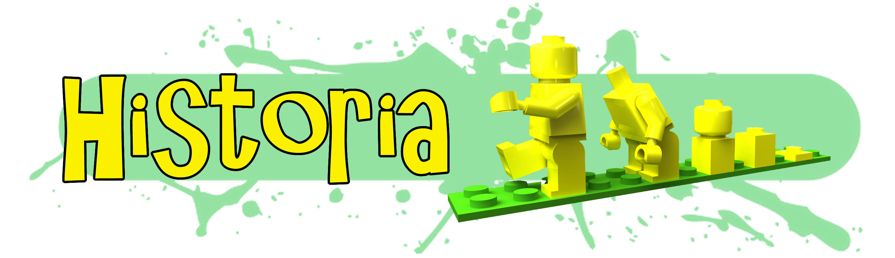

Intelirobot se fundó en el año de 2009 a partir del trabajo del Dr. Efraín Castillo Muñiz, quien dirigió a un equipo de robótica de la Universidad Politécnica de San Luis Potosí para su participación en el Torneo Mexicano de Robótica, uno de los concursos de robótica más importantes a nivel nacional, en el que realizaron una participación ejemplar logrando un segundo lugar en la categoría SEK (Standard Educational Kit) en la cual debían construir dos robots capaces de buscar un par de pequeños bloques negros en una pista de 5 metros cuadrados y depositarlos, justo al mismo tiempo, en un contenedor. Gracias a éste logro se ganan la posibilidad de viajar a Brasil, al LARC (Latin American Robotics Competition) en el que destacan notablemente por encima de países como Chile, Venezuela y los mismos mexicanos que habían obtenido el primer lugar en el TMR. Obtienen un segundo lugar a nivel Latinoamérica.
La experiencia del concurso los alienta a llevar estas experiencias de aprendizaje a más gente, abriendo Intelirobot, la primera escuela de robótica del estado y de las primeras del país. Que desde entonces ha atravesado por diferentes etapas, logrando resultados importantes, obteniendo primeros, segundos y terceros lugares a nivel local en concursos como Tecnotrónics y Roboxanti y a nivel nacional, dos 3ros lugares en la categoría de Soccer Junior del TMR, obteniendo el honor de representar a México en Robocup Singapur 2010 y Robocup Turquía 2011.
Sin embargo, el principal logro a lo largo de todo este tiempo de trabajo, ha sido poder cautivar a cientos de niños y jóvenes con clases de robótica, eventos de divulgación científica, pláticas y demás actividades que les abren el panorama a lo que puede ser una futura vocación.
